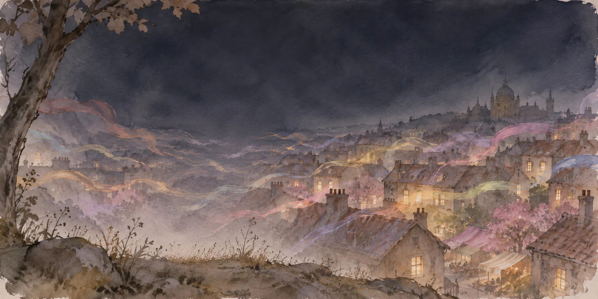

1738
Против любви, но за жизнь


доклад по роману Патрика Зюскинда «Парфюмер»
Жан-Батист Гренуй и мир частичных объектов

1738
Против любви, но за жизнь

1767
За любовь, но против жизни

Можно ли назвать творчеством то, что от первого до последнего шага идёт к смерти?

Повторение становится творчеством, когда его кто-то принимает
старая пьеса, которую играем, не помня текста
и не играет по старым нотам
терапия там, где встречаются две игры
призраки становятся предками

«Искусство — гарантия душевного здоровья»
— Луиза Буржуа
Живое произведение — это обращение.

«Когда я смотрю, меня видят, значит, я существую»
Винникотт
Гренуй не пахнет. Первое узнавание не состоялось.

Другой становится настоящим, когда выживает
в фантазии, в ярости, в нападении
не погибает и не мстит
внешним, отдельным, другим
В мире Гренуя не выживает никто.

Не «во мне ничего нет», а «меня никто не воспринял — и я не могу воспринять себя»

Двадцать пять девушек.
Двадцать пять убийств.
Один флакон.

А наутро — стыд, молчание и забвение
чужой образ встаёт на место твоего идеала
Фрейд, 1921
двадцать пять жизней — один запах
Шассге-Смиргель, 1984
вычерпанное — не дар, а оружие
Кляйн, 1957

Его вобрали. Но вобрали только запах.
семь лет внутри горы — почти буквальная утроба
Ференци, «Таласса», 1924
где не родился символ, «быть принятым» — значит «быть съеденным»
Сегал, 1957

Та же сила, что движет любым художником, — но обращённая против субъекта
оставляет другому свободу ответить и меняет обоих
отменяет и другого, и самого автора

Кажется, что переноса нет
Перенос не отсутствует — его трудно распознать.
Розенфельд, 1952
Катастрофа уже случилась — но рядом не было никого, кто помог бы её пережить.
Винникотт, «Страх распада»

Гренуй ни к кому не пришёл. Пациент — пришёл.
Наша работа — учуять того, кто сам себя не чует.